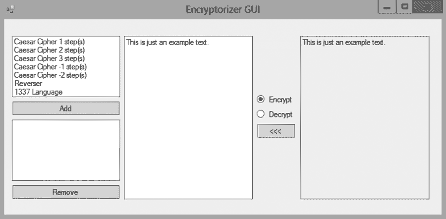

In this first block we'll refresh our object oriented skills by revisiting concepts such as constructors, public and private membership, interfaces and inheritance as well building GUIs using Windows Forms. Finally we'll take our first peek into the world of design patterns by implementing the iterator pattern.
Your job is to build a Phone Book as a C# GUI application. Use the phone book example discussed in class as inspiration. Your phone book must support the following functionality:
** Either by using IEnumerable or by implementing the pattern yourself from scratch
The purpose of this exercise is to get up to speed, familiarize ourselves with C#, and explore the concept of programming towards interfaces.
Consider the following scenario. You are running a company that creates encryption algorithms. All algorithms are two-way. In other words, they can encrypt strings as well as decrypt strings.
Your company is currently aiming to implement all your algorithms in C# and bundle them all as a single DLL.
To facilitate standardization you've decided to create an interface for what all classes that contain encryption algorithms should look like. See below.
interface IAlgorithm {
string Encrypt(string input);
string Decrypt(string input);
string GetName();
}Your job is now to create a class for each encryption algorithm. Each class must implement the interface properly, and must encrypt and decrypt according to specification.
I will show you how to implement the first algorithm, but you then have to implement the rest on your own.
The following is the specification for the first algorithm.
| Reversal algorithm | |
|---|---|
| Name | The Reversal Algorithm |
| Description | Reverses the input string character by character. |
| Example input | "Abc xyz" |
| Example output | "zyx cbA" |
Let's implement this algorithm. Create a new visual studio C# console project. Add a new interface file and copy in the IAlgorithm interface. Create a new class and copy in the following code.
class ReversalAlgorithm : IAlgorithm
{
string Encrypt(string input)
{
string reversed = "";
for(int i=input.Length-1; i>=0; i--)
reversed += input[i];
return reversed;
}
string Decrypt(string input)
{
return Encrypt(input);
}
string GetName()
{
return "The Reversal Algorithm";
}
}Congratulations, you've now implemented the first one of the algorithms.
Notice how the class implements the interface in the top using the syntax class ClassName : InterfaceName.
Notice also how we reuse the Encrypt method in the Decrypt method since they essentially behave the same in this algorithm.
If you're wondering what the implications are of stating that the ReversalAlgorithm class implents the IAlgorithm interface, try temporarily removing one of the methods from the class and then compile the project by pressing F5. You get an error. Why?
Make sure your implementation is correct by pasting in the following program in to the main entry point of your application (most often the static Main method of the Program class in the Program.cs file).
IAlgorithm algo = new ReversalAlgorithm();
string encrypted = algo.Encrypt("Hello world");
string decrypted = algo.Decrypt("sdrawkcaB");
Console.WriteLine("Hello world => " + encrypted);
Console.WriteLine("sssdrawkcaB => " + decrypted);
Console.ReadKey();Hello world => dlrow olleH sssdrawkcaB => Backwardsss
Notice that on the first line in the example program we're declaring the variable algo to be of type IAlgorithm not of type ReversalAlgorithm. This is the power of interfaces. Just like inheritance allows us to declare the base type and then instantiate any of the super types, interfaces allow us to declare the interface and then instantiate any one class that implements that interface.
This means that we can write programs towards the interfaces without knowing what kind of classes and implementations will show up in the future. As an example. Download the example class in the link below, add it to your project and then rewrite your main program as below.
IAlgorithm algorithm = new ReversalAlgorithm();
EncryptoStream stream = new EncryptoStream(algorithm);
stream.Start();You should now have a program that allows you to interactively encrypt and decrypt strings using your algorithm, and if you type in "Hello world" your terminal screen should look as follows.
The Reversal Algorithm > Hello world ENCRYPTED: dlrow olleH DECRYPTED: Hello world
Let me tell you one final piece before I'll leave you to implementing the rest of the algorithms. Remember that interfaces only specifies the minimal requirements of a class. Interfaces do pose set any further restrictions on the class. This means that each class can do more than just these methods. This will be necessary since some of the algorithms are not as static as the reversal algorithm. The Caesar cipher, for example, requires that you give it a number that represents the number of shifts you want to shift a word with.
You're now ready to implement the rest of the algorithms. The specifications follow below.
| Caesar Cipher | |
|---|---|
| Name | n-step Caesar Cipher |
| Description | Replaces each alphabetical character with an alphabetical character n steps further in the alphabet. The number of steps must be able to be assigned by the code that use the class, through for example the constructor. Note: This cipher cannot maintain case (i.e. upper or lower) when decrypting. Nor can it decrypt numbers properly. |
| Example input | "Abcxyz" |
| Example output (n=1) | "Bcdyza" |
| 1337 Lang | |
|---|---|
| Name | Language of the 1337's |
| Description | Replaces specific characters with numbers. Forces all strings to be lower case before encryption or decryption. |
| Charater replacement scheme | a=>4, b=>6, e=>3, g=>9, i=>!, l=>1, o=>0, t=>7 |
| Example input | "Abcxyz" |
| Example output | "46cxyz" |
| Multicipher | |
|---|---|
| Name | Generic multicipher |
| Description | Any number of IAlgorithm objects can be added to an instance of the Multicipher class at runtime. When encrypting, the algorithm runs each sub-algorithm on the input one after one. When decrypting it runs the algorithms one after one in the reverse order, but decrypting this time. |
| Charater replacement scheme | a=>4, b=>6, e=>3, g=>9, i=>!, l=>1, o=>0, t=>7 |
| Example input | "Abcxyz" |
| Example output (assuming given both CaesarCipher(1) and 1337 Lang in that order) | "6cdyz4" |
The assignment is now to create a graphical user interface that allows the user to select any combination of algorithms and then encrypt and decrypt strings using that particular combination.
You are allowed to hard-code the instantiation of the algorithms that the user can choose from.
Any particular algorithm must be allowed to be used multiple times in the combination.
The algorithms that the user selects must then be fed into a MultiCipher instance.
The user can then encrypt and decrypt strings using that particular MultiCipher.
Design the application any way you wish. See below gif for a runtime example.
